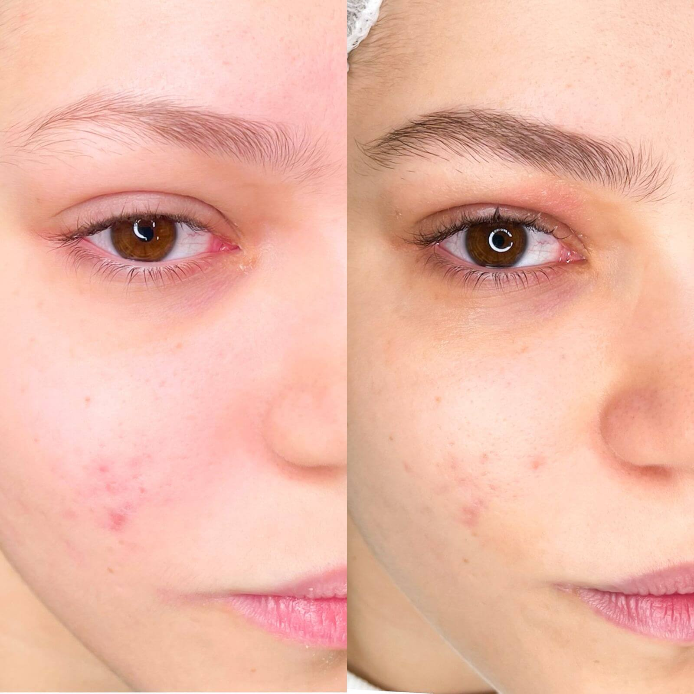
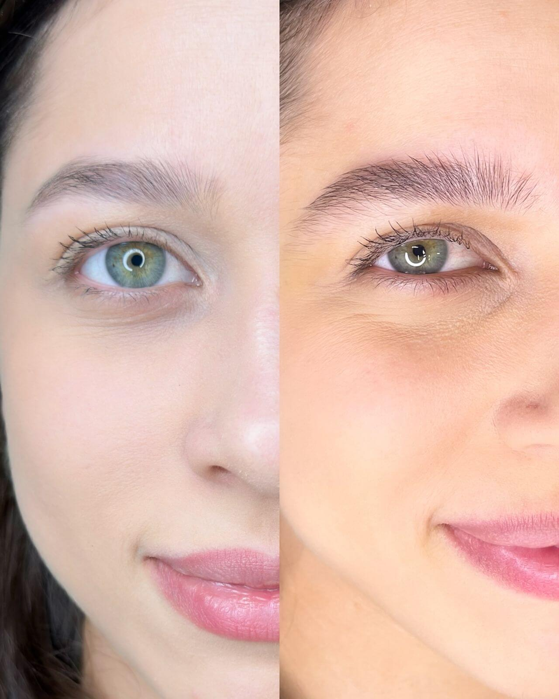
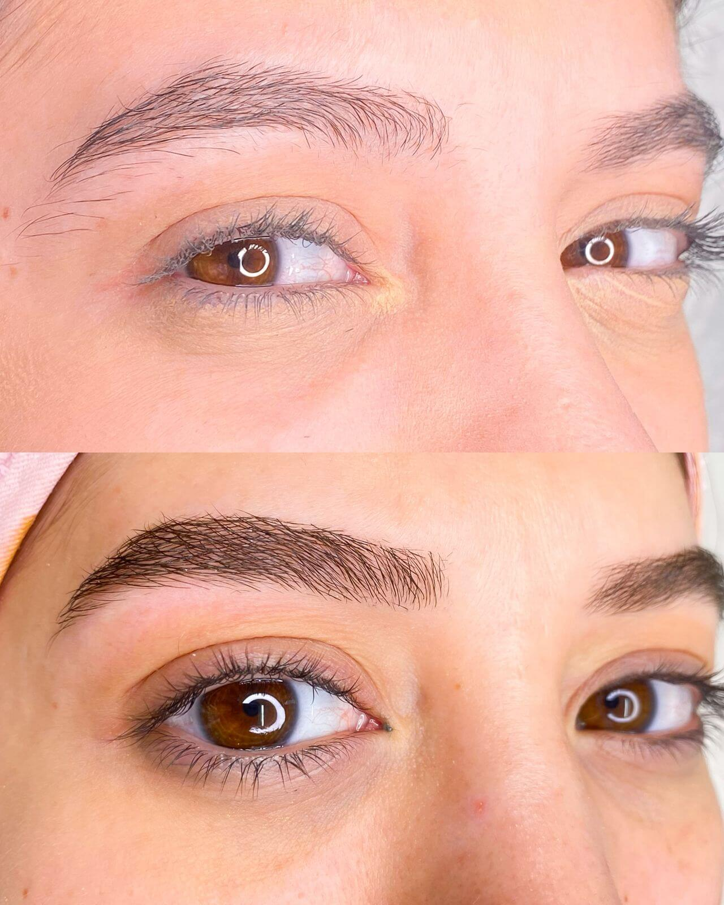
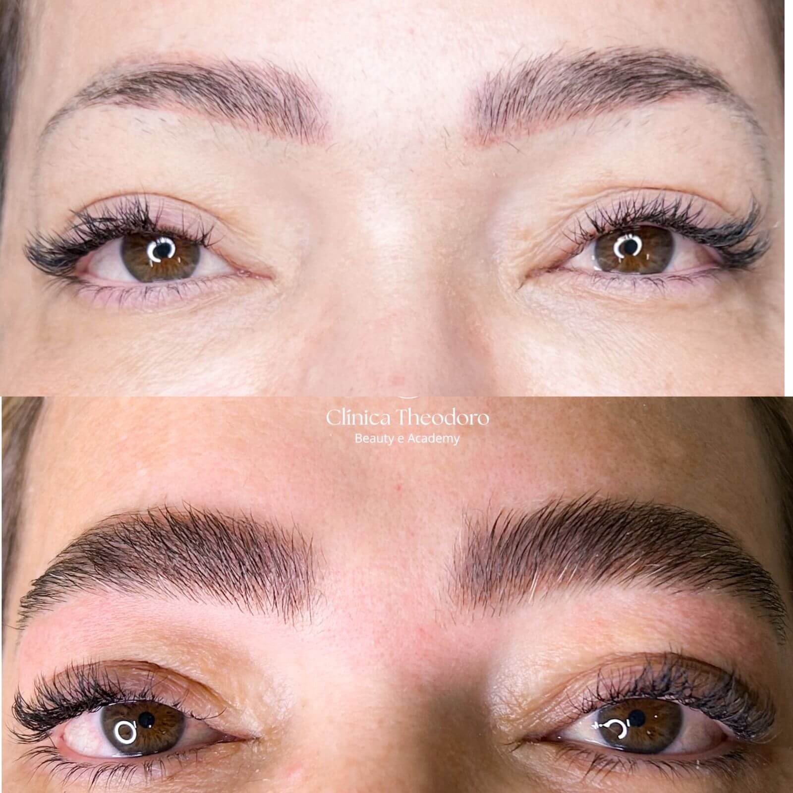
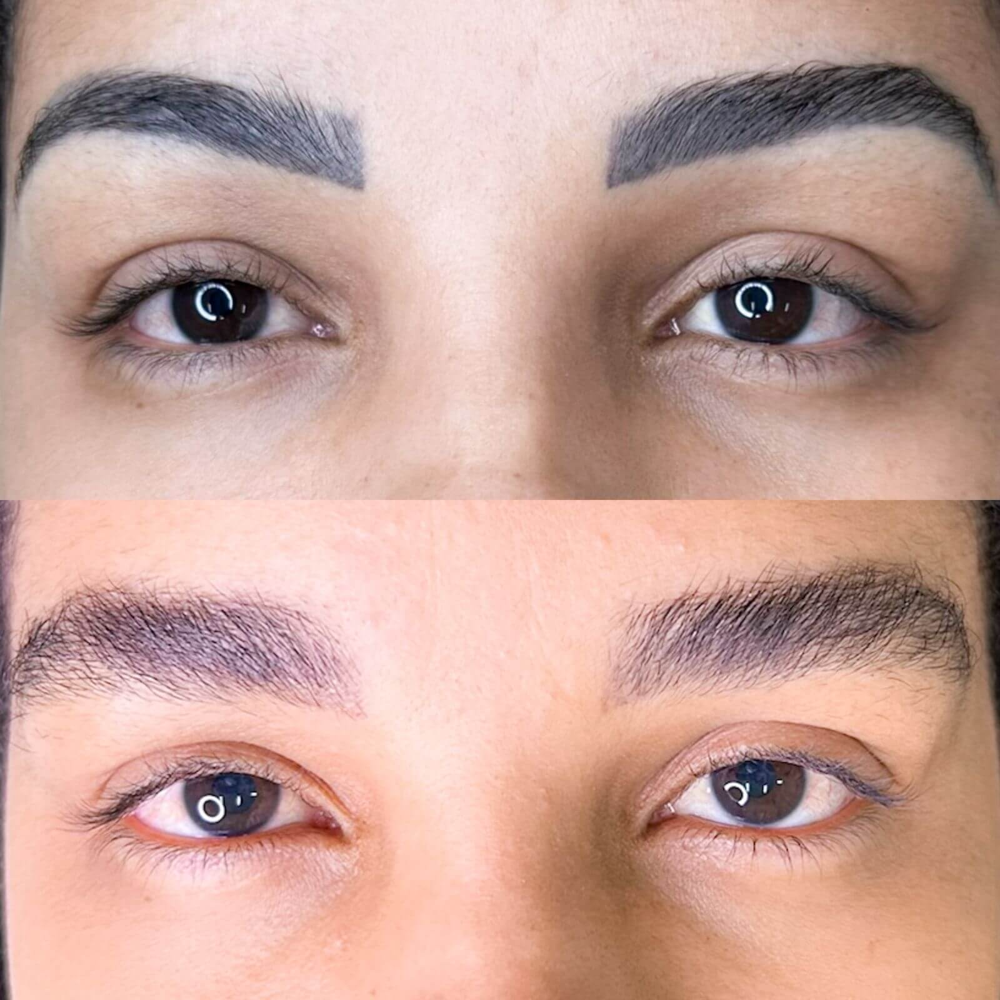
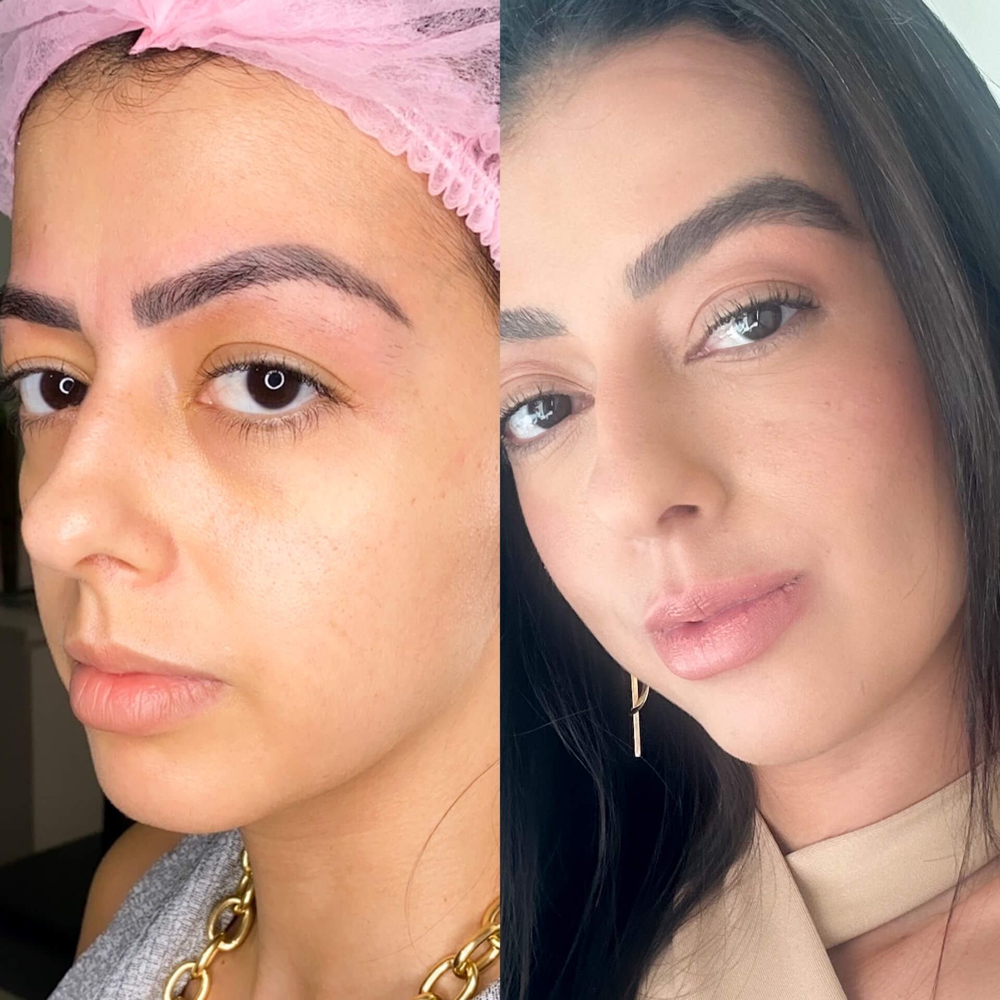
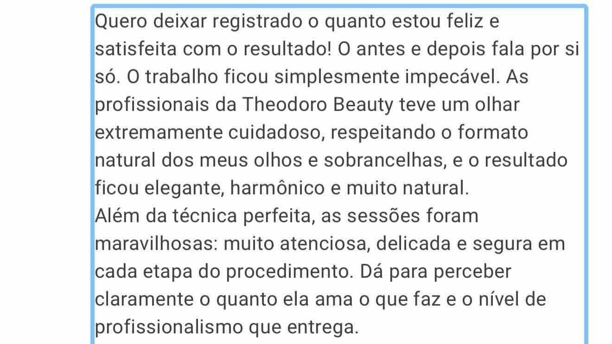
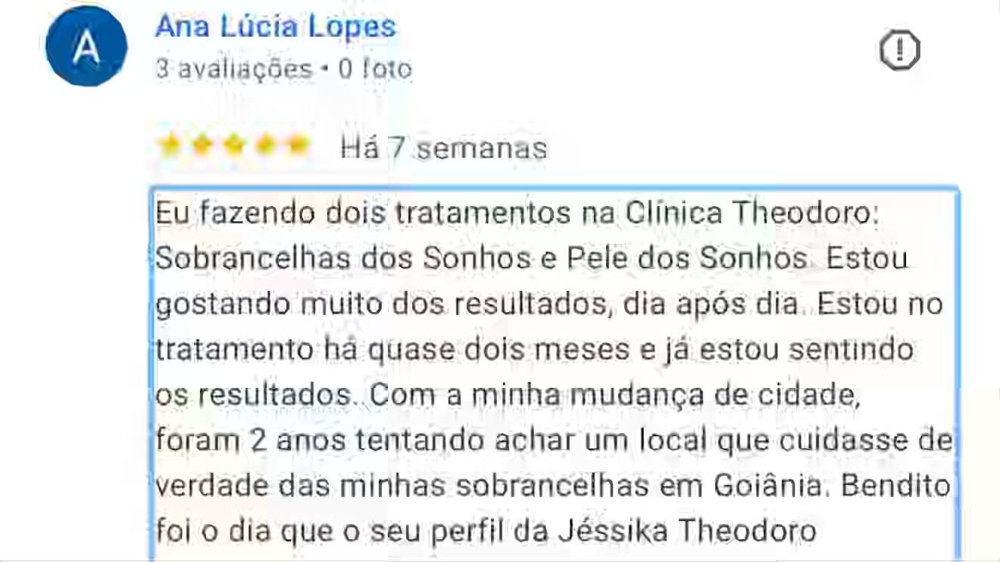
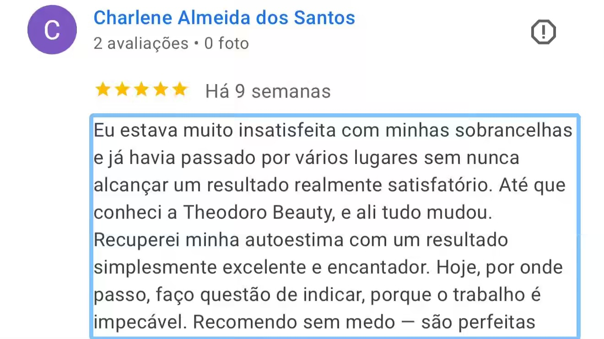
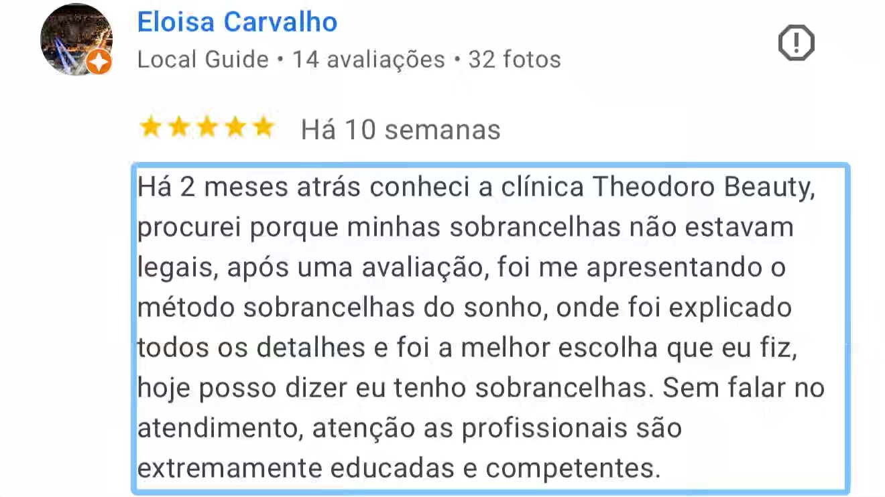

O Método Sobrancelha dos Sonhos preenche falhas, melhora o formato, aumenta os fios e ainda remove a micropigmentação antiga — tudo de forma completamente natural.
Cada foto é um resultado real, de uma cliente real — sem filtro, sem edição.
"Antes: fios ralinhos, muitas falhas e sem formato — apagava totalmente o olhar. Depois do Método Sobrancelha dos Sonhos: sobrancelhas cheias, com fios encorpados e um formato que valoriza muito o rosto. Diferença surreal."





Veja centenas de resultados no Instagram
@theodoro.beautyDesenvolvido pela Jéssika Theodoro, o método não é micropigmentação. É uma abordagem completa que atua em 6 frentes — do preenchimento ao estímulo do crescimento natural.
Técnica fio a fio que preenche áreas rarefeitas com precisão, criando uma sobrancelha cheia e uniforme — como se sempre tivesse sido assim.
Redesenho baseado em mapeamento facial para um formato que realmente harmoniza e valoriza o seu rosto — corrigindo assimetrias com precisão.
O método estimula o crescimento real dos fios, aumentando a densidade da sobrancelha ao longo do tratamento — não apenas visualmente.
Para quem tem micropigmentação que mudou de cor ou ficou pesada, o método trabalha para desfazer esse efeito e devolver aparência natural.
A cor cinza indesejada — herança de micropigmentações antigas — é corrigida, devolvendo tom natural que combina com a sua pele.
Sobrancelhas tão naturais que ninguém acredita que passaram por tratamento. Só você vai saber — e vai adorar cada vez que se olhar no espelho.
Existe um caminho. E ele começa com uma avaliação gratuita.
— Jéssika Theodoro, criadora do Método
Você se reconhece em algum desses perfis? Então temos a solução.
Seus fios são poucos ou deixam buracos visíveis que maquiagem não cobre de forma satisfatória.
Fez micropigmentação, mas com o tempo a cor ficou cinza, pesada ou artificial — envelhecendo o olhar.
Suas sobrancelhas têm um formato que não combina com o seu rosto — muito fina, grossa, descida ou assimétrica.
Quer sobrancelhas mais densas de verdade — estimulando o próprio crescimento dos seus fios.
Palavras de quem passou pelo Método Sobrancelha dos Sonhos.




Um processo pensado para o seu caso específico — do diagnóstico ao acompanhamento.
Analisamos o estado das suas sobrancelhas, o histórico de procedimentos e o que você deseja alcançar.
Definimos o plano ideal — seja reconstrução, correção de micropig, preenchimento ou estimulação de crescimento.
Técnica exclusiva, produtos de alta qualidade e toda a precisão necessária para entregar o melhor resultado.
Natural, cheia, com formato perfeito — e a confiança de se olhar no espelho e se sentir linda.
"Eu não vendo procedimentos.
Eu devolvo a confiança de se olhar
no espelho e se sentir linda."
Sou especialista em reconstrução e design de sobrancelhas, e criei o Método Sobrancelha dos Sonhos porque vi que as mulheres precisavam de uma solução real — não de mais uma micropigmentação que envelhece com o tempo.
O método surgiu da combinação de técnica, estudo e escuta. Escuta de cada mulher que entrou na clínica com sobrancelhas ralas, com falhas, com micropig cinza — e saiu com o rosto transformado e a autoestima renovada.
Com mais de 300 transformações realizadas em Goiânia, o método continua evoluindo — sempre com o mesmo objetivo: sobrancelhas que parecem naturais porque são tratadas com naturalidade.
Agende sua avaliação gratuita e descubra qual é o caminho certo para as suas sobrancelhas. Sem pressão, sem compromisso — só você, a Jéssika e o diagnóstico que vai mudar tudo.
Avaliação 100% gratuita · Goiânia · Sem compromisso